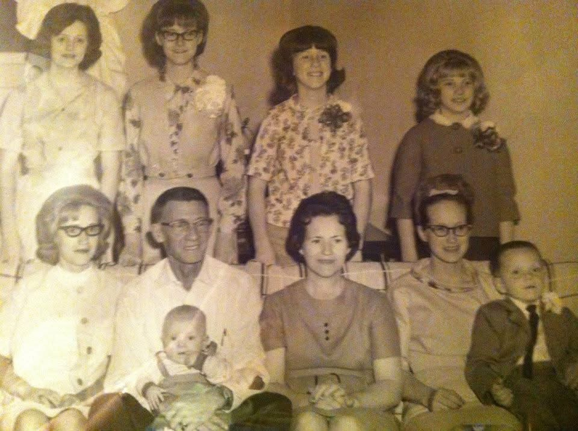

Before & After Restorations
Original Photograph

Professionally Restored

Preserving the faces, stories, and connections that matter most.
Every restoration begins with a treasured memory. Whether repairing a damaged family photograph, restoring faded color, or creating a meaningful family legacy portrait, every image is treated with care, respect, and attention to the people whose stories deserve to be preserved.
Some family moments were never captured together in a single photograph. Through careful artistic restoration and composition, individual photographs can be combined into timeless portraits that celebrate relationships across generations while preserving the identity and dignity of every person.


Legacy Portraits may include combining multiple photographs, updating clothing, enhancing backgrounds, adjusting lighting, and creating artistic family compositions while preserving authentic facial features and family likenesses.


Every photograph represents someone who mattered. Let TruePortrait Revival restore and preserve your treasured memories for future generations.
Begin Your Restoration